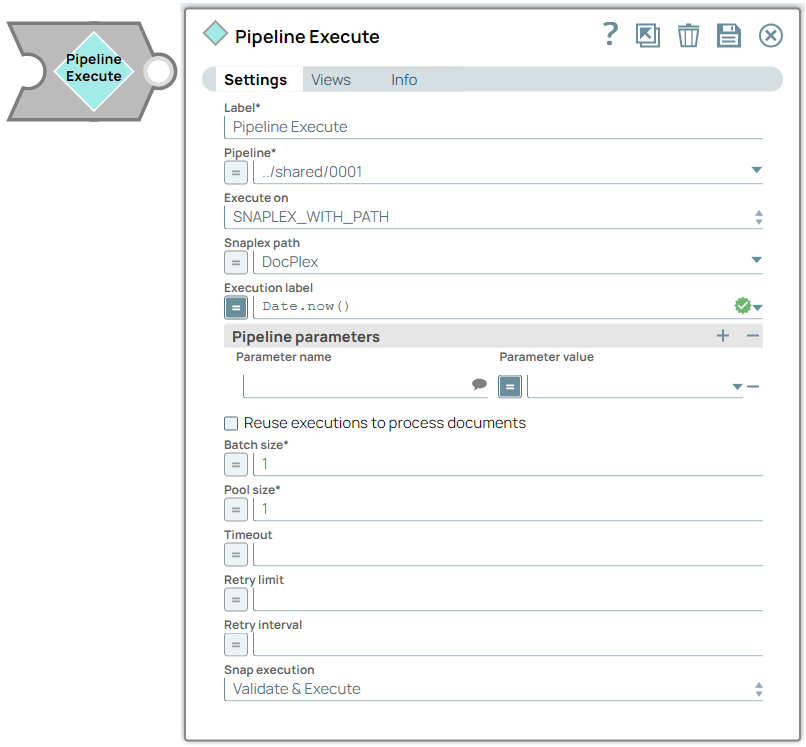
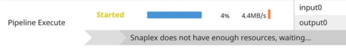
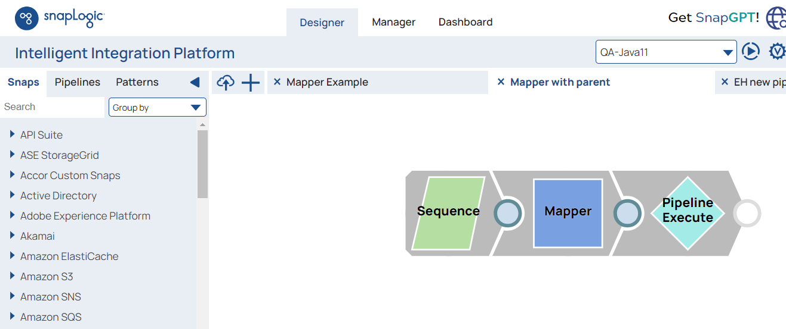
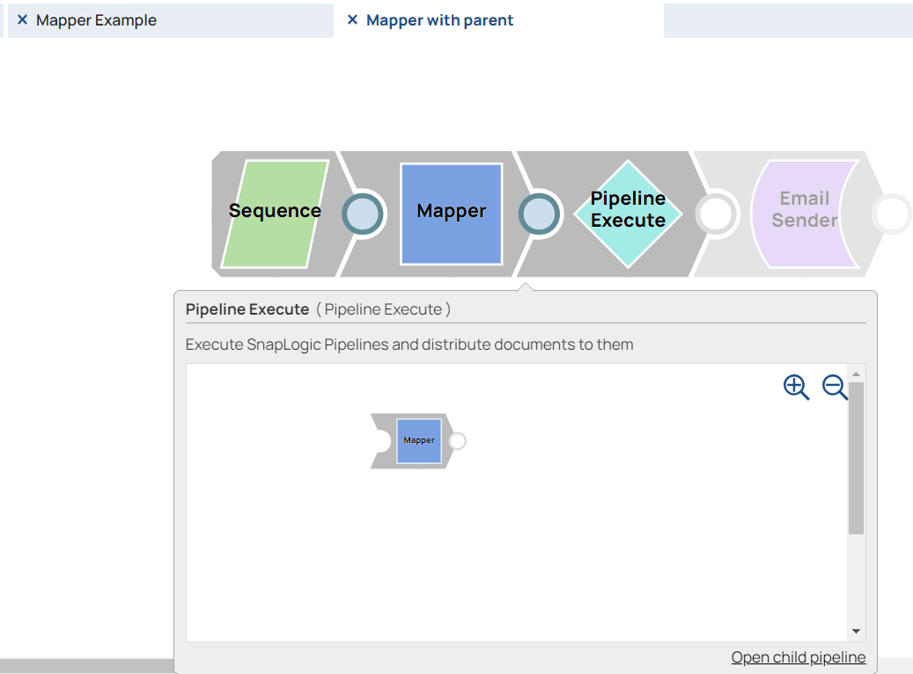

Pipeline Execute
The Pipeline Execute Snap executes a pipeline in a specific Snaplex with the specified parameters. You can use this Snap to execute multiple child pipelines from a single parent pipeline. Configure the Snap to execute the pipeline and data input.


- This is a Flow-type Snap. Learn more about Snap Types.
 Works in Ultra Tasks
Works in Ultra Tasks
Key features
-
Structure complex pipelines into smaller segments through child pipelines
-
Initiate parallel data processing using the pooling option
-
Orchestrate data processing across nodes, in the Snaplex or across Snaplexes
-
Distribute global values through pipeline parameters across a set of child pipeline Snaps
Supported modes for pipelines
| Modes | Description |
|---|---|
| Standard mode (default) |
|
| Reuse mode |
|
| Resumable Child pipeline |
|
| Ultra Task pipelines |
|
| ELT Mode |
|
| Pooling Enabled |
|
 Note:
Note:
Replaces Deprecated Snaps: This Snap replaces the ForEach and Task Execute Snaps and the Nested pipeline mechanism.
Fixed issues
- In the June 2026 release (444patches34994), the Pipeline Execute Snap fixed an issue where the error view routing would cause the parent pipeline to hang.
Behavior changes
- In the May 2026 release (444patches34698), the Pipeline Execute Snap now correctly routes errors to the parent instead of causing the parent pipeline to stop.
Limitations
- If there are insufficient Snaplex nodes to execute the pipeline, the Snap waits until
the resources become available. In this scenario, a message appears in the execution
statistics dialog.

-
Only the last 100 completed child pipeline runs are saved for inspection in the Monitor because this Snap generates many pipeline runtimes.
-
The Pipeline Execute Snap cannot exceed a depth of 64 child pipelines before they begin to fail.
The child pipelines do not display data preview details. However, you can view the data preview for any child pipeline after the Pipeline Execute Snap completes execution in the parent pipeline. Ultra Pipelines do not support batching.
-
Unlike the Group By N Snap, when you configure the Batch field, the documents are processed one by one by the Pipeline Execute Snap and then transferred to the child pipeline when the parent pipeline receives it. The child pipeline closes when the batch or input stream ends.
-
Error handling for child pipelines inside a parent Ultra Pipeline are not supported. Instead, configure error handling in the Ultra Pipeline with the Pipeline Execute Snap.
Examples
- ../../examples/core/sp-flow/snap-pipeline-execute/example-run-a-child-pipeline-multiple-times/example-run-a-child-pipeline-multiple-times.html: The PE_Multiple_Executions example project demonstrates how to configure the Pipeline Execute Snap to execute a child pipeline multiple times.
- ../../examples/core/sp-flow/snap-pipeline-execute/example-propagate-a-schema-backward/example-propagate-a-schema-backward.html: The PE_Backward_Schema_Propagation_Contacts.zip example project demonstrates the schema that suggests a feature of the Pipeline Execute Snap.
- ../../examples/core/sp-flow/snap-pipeline-execute/example-propagate-schema-backward-and-forward/example-propagate-schema-backward-and-forward.html: The PE_Backward_Forward_Schema_Propagation example project demonstrates the Pipeline Execute Snap's capability of propagating schema in both directions – upstream and downstream.
Snap views
| Type | Description | Examples of upstream and downstream Snaps |
|---|---|---|
| Input |
The document or binary data to send to the child pipeline. Retry is not supported if the input view is a Binary data type. |
|
| Output |
|
|
| Learn more about Error handling. | ||
Snap settings
Legend:
- Expression icon (
 ): Allows using
pipeline parameters to set field values dynamically (if enabled). SnapLogic Expressions
are not supported. If disabled, you can provide a static value.
): Allows using
pipeline parameters to set field values dynamically (if enabled). SnapLogic Expressions
are not supported. If disabled, you can provide a static value. - SnapGPT (
 ): Generates SnapLogic Expressions
based on natural language using SnapGPT. Learn
more.
): Generates SnapLogic Expressions
based on natural language using SnapGPT. Learn
more. - Suggestion icon (
 ): Populates a
list of values dynamically based on your Snap configuration. You can select only one
attribute at a time using the icon. Type into the field if it supports a comma-separated
list of values.
): Populates a
list of values dynamically based on your Snap configuration. You can select only one
attribute at a time using the icon. Type into the field if it supports a comma-separated
list of values. - Upload
 : Uploads files. Learn more.
: Uploads files. Learn more.
| Field/Field set | Type | Description |
|---|---|---|
Label
|
String | Required. Specify a unique name for the Snap. Modify this to be more appropriate, especially if more than one of the same Snaps is in the pipeline. Default value: Pipeline Execute Example: ExecuteCustomerUpdate Pipeline |
| Pipeline | Dropdown list/Expression | Required. Specify the child pipeline's absolute or
relative (expression-based) path to run. If you specify only the pipeline name, Snap
searches for the pipeline in the following folders in this order:
You can specify the absolute path to the target project using the Org/project_space/project notation. You can also dynamically choose the pipeline to run by entering an expression in this field when Expressions are enabled. For example, to run all of the pipelines in a project, you can connect the SnapLogic List Snap to this Snap to retrieve the list of pipelines in the project and run each one. |
| Execute On | Dropdown list | Select one of the following Snaplex options to specify the target Snaplex for
the child pipeline:
For more information, refer to the Best Practicesto be updated. Default value: SNAPLEX_WITH_PATH Example: groundplex4-West |
| Snaplex path | Dropdown list/Expression | Appears when you select SNAPLEX_WITH_PATH for Execute
On. Enter the name of the Snaplex on which you want the child pipeline to run. Click to select from the list of Snaplex instances available in your Org. Default value: N/A Example: DevPlex-1 |
| Execution Label | Dropdown list/Expression |
Specify the label to display in the Pipeline view of the Dashboard. You can use this field to differentiate each pipeline execution. Default value: N/A Example: NetSuite-Create-Credit-Memo |
| Pipeline parameters | Use this fieldset to define the Pipeline Parameters for the pipeline selected in the Pipeline field. When you select Reuse executions to process documents, you cannot change parameter values from one Pipeline invocation to the next. | |
| Parameter name | String/Suggestion | Debug mode Enter the name of the parameter. Select the defined Pipeline Parameters in the Pipeline field. Default value: N/A Example: Postal_code |
| Parameter value | Dropdown list/Expression | Enter the value for the Pipeline parameter, which can be an expression
based on incoming documents or a constant. If you configure the value as an
expression based on the input, then each incoming document or binary data
evaluates against that expression when to you invoke the pipeline. The result of
the expression is JSON-encoded if it is not a string. The child Pipeline then
needs to use the When Reuse executions to process documents is enabled, the parameter values cannot change from one invocation to the next. Default value: N/A Example: 9402 |
| Reuse executions to process documents | Checkbox | Select this checkbox to start a child pipeline and pass multiple inputs to the
pipeline. Reusable executions continue to live until all of the input documents to
this Snap are fully processed. Important: Important:
Default status: Deselected |
| Batch size | Integer/Expression | Required. Specify the number of documents in the batch
size. If Batch Size is set to N, then N input documents are sent to
each child pipeline that is started. After N documents, the child pipeline
input view is closed until the child pipeline completes its execution. The output of
the child pipeline (one or more documents) passes to the Pipeline Execute output
view. New child pipelines are started after the original pipeline is complete.Note:
Default value: 1 Example: 2 |
| Pool size | Integer/Expression | Required. Specify an execution pool size to process
multiple input documents or binary data concurrently. When the pool size is greater
than one, the Snap starts Pipeline executions as needed up to the specified pool
size. When you select Reuse executions to process documents, the Snap starts a new execution only if either all executions are busy working on documents or binary data and the total number of executions is below the pool size. Default value: 1 Example: 4 |
| Timeout (in seconds) | Integer/Expression | Specify the number of seconds for which the Snap must wait for the child
pipeline to complete the runtime. If the child pipeline does not complete the
runtime before the timeout, the execution process stops and is marked as failed. Default value: N/A Example: 10 |
| Retry limit | Integer/Expression | Specify the maximum number of retry attempts that the Snap must make in the
case of a failure. If the child pipeline does not execute successfully, an error
document is written to the error view. If the child pipeline is not in a completed
state, then it will retry. The pipeline failure at the application level could have
various causes, including network failures.Important: Usage Guidelines
Default value: N/A Example: 3 |
| Retry interval | Integer/Expression | Specify the minimum number of seconds the Snap must wait between two retry
requests. A retry happens only when the previous attempt results in an error.  Warning: Warning:
Default value: N/A Example: 10 |
| Snap execution
|
Dropdown list |
Choose one of the three modes in
which the Snap executes. Available options are:
Default value: Validate and Execute Example: Execute only |
Troubleshooting
| Error | Reason | Resolution |
|---|---|---|
| Account validation failed | The Pipeline ended before the batch could complete execution because of a connection error. | Verify that the Refresh token field is configured to handle the inputs properly. If you are not sure when the input data is available, configure this field as zero so the connection is always open. |
Access pipelines in the Pipeline Catalog in the Designer to create a Child pipeline
You can now browse the pipeline catalog for the target child pipeline and then select, drag, and drop it into Canvas. The Designer automatically adds the child pipeline using the Pipeline Execute Snap. You can preview a child pipeline by hovering over a Pipeline Execute Snap while the parent pipeline is open on the Designer.
Return child pipeline output to the parent pipeline
A common use case for the Pipeline Execute Snap is to run a child Pipeline whose output is immediately returned to the parent pipeline for further processing. You can achieve this return with the following Pipeline design for the child Pipeline.
In this example, the document in this child Pipeline is sent to the parent Pipeline through output1 of the child pipeline. Any unconnected output view is returned to the parent Pipeline. You can use any Snap that completes execution in this way.


Execution States
When a Pipeline Execute Snap activates its child pipeline, you can view the status as it executes on the SnapLogic Designer canvas.
-
If the parent Pipeline has the status Failed shown in the Status column, the following message is displayed: One of the child Pipelines Failed.
-
If the parent Pipeline has the status Completed with Errors shown in the Status column, the following message is displayed: One of the child Pipelines completed with Errors.
These execution state messages apply even when the child pipeline does not appear on the Dashboard because of child pipeline execution limits.
The Monitor Execution overview does not include the Completed with Warnings status as a searchable status.